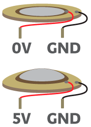
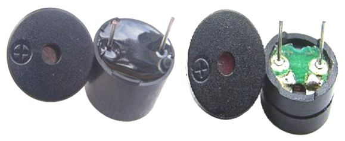
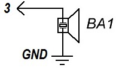
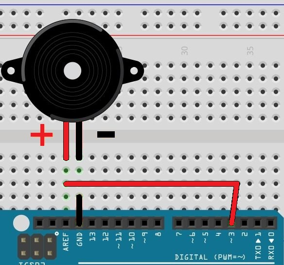

Пьезодинамики
Пьезодинамик (пьезоизлучатель, зуммер, баззер) легко подключается к платам Arduino и вы можете заставить вашу схему издавать нужные звуки – сигнализировать, пищать или проигрывать мелодию.
Рис. 1 - Условное графическое обозначение пьезодинамика
Пьезодинамик конструктивно представлена металлической пластиной с нанесенным на нее напылением из токопроводящей керамики. Пластина и напыление выступают в роли контактов. Устройство полярно, имеет свои «+» и «-». Принцип действия пьезодинамика основан на открытом братьями Кюри в конце XIX века пьезоэлектрическом эффекте: при подаче электричества на пьезодинамик он начинает деформироваться (рис. 2). При этом происходят удары о металлическую пластинку, которая и производит “шум” нужной частоты.

Рис. 2 - Устройство пьезодинамика
Пьезодинамики бывают двух видов: активный и пассивный. Принцип действия у них одинаков, но в активном нет возможности менять частоту звучания, хотя сам звук громче и подключение проще.
Главное отличие активного пьезодинамика от пассивного заключается в том, что активный пьезодинамик генерирует звук самостоятельно. Для этого пользователь должен просто включить или выключить его (подав напряжение на контакты или обесточив). Активный пьезодинамик будет выдавать более громкий звуковой сигнал в сравнении с пассивным. Частота излучаемого звука активного пьезодинамика составляет значения 2,5 кГц +/- 300Гц. Напряжение питания для составляет 3,5 ... 5 В.
Пассивный пьезодинамик требует источника сигнала, который задаст параметры звукового сигнала. В качестве такого источника может выступать плата Ардуино.
Как отличить активный и пассивный пьезодинамики? Если со стороны выводов видна печатная плата зеленого цвета, это - пассивный пьезодинамик; если черного – активный (рис. 3).

Рис. 3 - Активный (слева) и пассивный (справа) пьезодинамики
Синтез звука
Детали:
- Arduino UNO.
- Пассивный пьезодинамик.
- Соединительные провода.
- Макетная плата.

Рис. 4 - Принципиальная схема подключения пьезодинамика к Arduino
Сборка
Присоедините пьезодинамик к плате Arduino (рис. 5).
Если пьезодинамик на вписывается в отверстия на плате, попробуйте его немного повернуть, так чтобы его выводы вошли в соседние отверстия, как бы по диагонали.

Рис. 5 - Подключение пьезодинамика к Arduino UNO
Скетч для звука сирены
int p=3; //объявляем переменную с номером вывода, на который подключили пьезоэлемент void setup() { pinMode(p, OUTPUT); //объявляем вывод как выход } void loop() { tone(p, 500); //включаем звук частотой 500 Гц delay(100); //ждем 100 мс tone(p, 1000); //включаем звук частотой 1000 Гц delay(100); //ждем 100 мс }
Изменяя частоту и продолжительность звука можно получить различные звучания сирены
Скетч для мелодии с использованием библиотеки pitches.h
#include "pitches.h"// подключаем библиотеку pitches.h // ноты для мелодии int melody[] = {NOTE_C4, NOTE_G3,NOTE_G3, NOTE_A3, NOTE_G3,0, NOTE_B3, NOTE_C4}; // продолжительность ноты: 4 - четвертная, 8 - восьмая: int t1[] = {4,8,8,4,4,4,4,4 }; void setup() { pinMode(3, OUTPUT); } void loop() { // проходим через все ноты мелодии: for (int i = 0; i < 8; i++) { int t2 = 1000/t1[i]; // вычисляется продолжительность ноты tone(3, melody[i],t2); int pause = t2 * 1.30; delay(pause); noTone(3); } }
В первой строчке мы подключаем заголовочный файл pitches.h при помощи оператора #include. Файл pitches.h находится в папке examples\02.Digital\toneMelody папки с Arduino IDE. Далее создается массив из нот melody, а также массив из продолжительности проигрывания ноты t1.
В процедуре setup идет цикл, где для каждой ноты вычисляется его продолжительность и вызывается функция tone(), которая и воспроизводит нужный звук.
Обратите внимание, что основной код находится в методе setup(), поэтому программа выполняется один раз. Если вы хотите послушать её ещё раз, то нажмите на кнопку Reset на плате Arduino Uno. Для многократного повторения мелодия разместите основной код в процедуру loop.
Если мелодия не слышна:
- Проверьте размещение динамика.
- Попробуйте вытянуть динамик из платы и снова воткнуть его на свое место, а потом загрузите скетч в плату Arduino.
Скетч для мелодии "В лесу родилась ёлочка"
#include "pitches.h" // ноты для мелодии int melody[] = {NOTE_C4, NOTE_A4, NOTE_A4, NOTE_G4, NOTE_A4, NOTE_F4, NOTE_C4, NOTE_C4, NOTE_C4, NOTE_A4, NOTE_A4, NOTE_AS4, NOTE_G4, NOTE_C5, 0, NOTE_C5, NOTE_D4, NOTE_D4, NOTE_AS4,NOTE_AS4,NOTE_A4, NOTE_G4, NOTE_F4, NOTE_C4, NOTE_A4, NOTE_A4, NOTE_G4, NOTE_A4, NOTE_F4}; // продолжительность ноты: int t1[] = {400,400,400,400,400,400,400,400,400,400,400,400, 400,600,20,400,400,400,400,400,400,400,400,400,400,400,400,400,600}; void setup() { pinMode(11, OUTPUT); } void loop() { for (int i = 0; i < 29; i++) { tone(11, melody[i],t1[i]); delay(t1[i]); noTone(11); } }
Источники
arduinokit.ru - УРОК 11. ARDUINO И BUZZER (ПИЩАЛКА)
arduinomaster.ru - Пищалка – пьезодинамик Ардуино